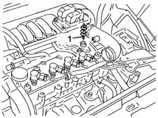

1080D50 engine oil vapour recirculation flame trap - repl.
- Path
- Procedures > 10 ENGINE > 1080 EXHAUST EMISSION CONTROL SYSTEM > 1080D crankcase vapour/gas recirculation system > 1080D50 engine oil vapour recirculation flame trap - repl.
- Kind
- repair procedure (removal / refitting; the operation number is the code)
- Applies to
- engines: 1.2 16v, 1.4 16v; all production periods
- Interactive page
- https://sloeber94.github.io/elrnDB-lYpsln/en/#/2429004
Applies to: engines: 1.2 16v; all production periods
 Removing
Removing
 Refitting
RefittingProceed with removal 1048A10 air cleaner filtering element - replace .
Proceed with removal 1080D24 engine oil vapour intake pipe - r + r .
1. Remove the engine oil vapour recirculation flame trap.

Applies to: engines: 1.4 16v; all production periods
Removing
RefittingProceed with removal 1048A10 air cleaner filtering element - replace .
Proceed with removal 1080D24 engine oil vapour intake pipe - r + r .
1. Remove the engine oil vapour recirculation flame trap from its seat.
Applies to: engines: 1.2 16v; all production periods
Refitting
RemovingRefit the engine oil vapour recirculation flame trap.
Proceed with refitting 1080D24 engine oil vapour intake pipe - r + r .
Proceed with refitting 1048A10 air cleaner filtering element - replace .
Applies to: engines: 1.4 16v; all production periods
Refitting
RemovingFit the engine oil vapour recirculation flame trap in its seat.
Proceed with refitting 1080D24 engine oil vapour intake pipe - r + r .
Proceed with refitting 1048A10 air cleaner filtering element - replace .